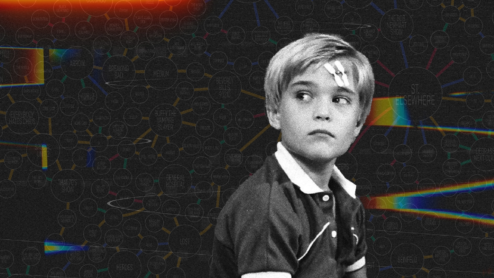

The Visual Evolution of the Tommy Westphall Universe
This article was first published in Nightingale on April 19, 2022.
Television series finales often offer their long-time viewers heartfelt moments, character arc completions, plot line conclusions, tears, laughs and more. Unlike any other series finale, the 80s drama St. Elsewhere offered its viewers something much different – a puzzle. A puzzle which has remained unfinished after it was first hypothesized over two decades ago, offering a unique challenge for data visualization artists. The challenge – visualize a forever-growing list of American television shows and how they’re all connected through the mind of an autistic boy named Tommy Westphall.
Where it all began
St. Elsewhere was an American medical drama which ran from 1982 through 1988. While the show was not an instant hit, it did develop a small but loyal fan base over its six-year run, at one point being part of TV Guide’s “50 Best Shows of All Time” list. Not unlike many shows such as The Sopranos, Twin Peaks, Two and a Half Men and Breaking Bad, St. Elsewhere’s finale went down as one of its most memorable episodes, particularly its final scene.
In the final moments of the show, Dr. Westphall and his autistic son Tommy are seen sitting in Dr. Auschlander’s office inside the hospital as snow falls. The image cuts to an exterior shot of the hospital, shaking. It is revealed at this moment that Tommy and Dr. Auschlander are seen in an apartment building, Tommy playing with a snow globe containing a miniature version of the hospital. After an exchange of dialogue between characters, it is implied that Tommy had imagined all the events of the series, playing on the now cliché television trope of “everything was just a dream,” by placing the events inside the mind of an autistic boy.
St. Elsewhere had direct connections with 13 other television shows through crossovers, cameos and more. This places the connected shows – M*A*S*H, Method and Red, The Bob Newhart Show, Crossing Jordan, Providence, Julia, Oz, Degrassi Junior High, The White Shadow, Chicago Hope, Tattingers, Cheers and Homicide Life on the Street – in the same fictional universe. In a classic game of six degrees of separation, these 13 connected shows are connected to an additional 18 shows. These connections grow and grow to the current list of 577 shows. Some of the connections are direct – in the form of crossovers and cameos. Some series spin off entire other series, expanding their fictional universes. Some connections are indirect – in the form of fictional places, character names, awards, newspapers, potato chip brands and more.
What once began as a hypothesis among two friends in 1999, has since evolved into a cult following of contributors, adding to the Tommy Westphall Universe.
The evolution
In 1999, Keith Gow and Ash Crowe began discussing the Tommy Westphall Universe. They exchanged emails, detailing everything from The Simpsons to Jay Leno, ultimately creating the first list and chart of the Tommy Westphall Universe in 2011.
Image credit: Keith Gow and Ash Crowe.
This chart made a precedent that the list can and should exist visualized, not simply in text. At the time, the list contained less than 200 shows.
Over the next four years, the chart grew to just over 400 shows, more than doubling from the original chart.
Image credit: Keith Gow and Ash Crowe.
When this chart was presented in 2015, individuals following the evolution of the Tommy Westphall Universe attempted to visualize the universe in their own way.
In 2015, a physical version and reimagined visualization of the Tommy Westphall Universe appeared at the University of Waterloo’s art gallery, designed by Dave Dyment.
Photo credit: Dave Dyment.
The next major evolution in the chart was posted on Reddit in May 2020 by user u/TheTrueBreadLord. The chart was a significant elaboration from the 2015 chart by Gow and Crowe, captioning each connection and how shows were linked.

Image credit: Reddit user TheTrueBreadLord.
Up until I redesigned the chart between March and April 2022, this was the most comprehensive visual representation of the Tommy Westphall Universe.
Today
When I came across the chart created by Reddit user TheTrueBreadLord, I wanted to try to visualize the Tommy Westphall Universe in my own way. Where my chart differs is added variation in bubble size depending on the number of connections, and color-coding the connections based on the way each show is linked.

Image credit: William Careri. Click to enlarge.
This is not meant to be all-encompassing. In the month it took me to research the latest updates to the Tommy Westphall Universe, 20 more additions were made via the Tommy Westphall Universe Wiki. This was my way to visualize the universe in a way which was easier to read, with lines color-coded and non-overlapping, and varying the size of markers for television shows.
The future
The Tommy Westphall Universe will never be complete. It has been further hypothesized that the Tommy Westphall Universe encompasses 90 percent of all American television shows.
While the list continues to grow, a challenge is offered to data visualization artists. Developing a new map is a lot of work, but as we use new tools to visualize data, this is the perfect challenge for television-loving data visualization artists.